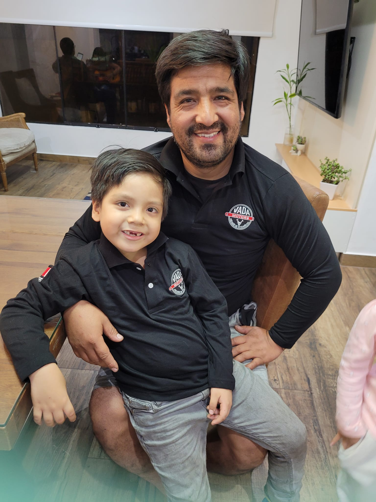

AUDIENCE
The Elio's Chamber of Commerce main audience is focused on the local stores and business within Elio area, the local community, the neighborhoods surrounding areas' businesses and potential customers.
PERSONAS
Vilma Rojas
Hair dresser, with more than 15 years of experience in Elio, she is expecting to revive her saloon, since the restrictions for the pandemic affected her and her economy, she is looking for help to let other people knows her skills as a hair stylist.
Ramon Vada
Owner of Vada Motors, an auto repair center specialized in finding the most difficult problems other technicians cannot solve, he is starting to develop his business thanks to social media and TikTok, and he would like to know a little more about business marketing.
Juan Perez
An investor from nearby, he would like to know growing businesses so he can invest in and help them grow, he really is eager to work with companies that use technology and let people know their business by internet or social media.
Jesus Dominguez
Neighbor of Elio, he would like to know what products and services are provided in his own commmunity, he wants to support his neighbors and his neighborhood by consuming products and services he needs.
Pamela Rojas
They are looking for products and services that can be delivered to their home near Elio such as grocery stores or a handyman to help repair things for her.